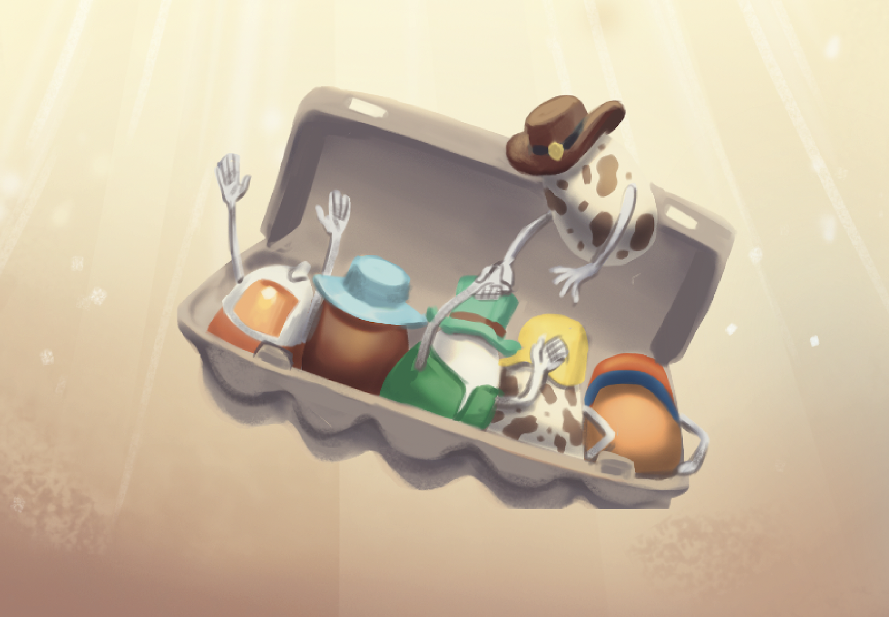

Team Dynamics (A Look Inside How Our Team Works)
3RD OCTOBER 2021

Ah, teamwork. Arguably the core of almost everything great
that has ever been done in the history of mankind. That might be
a bit dramatic, but there is definitely some truth behind it.
Our HardBoiled Studios team is unique (pls imagine I said
that in the most humble way possible). We’re all either
currently students or working full-time in the ~real world~. A
lot of our free time is spent working on our debut game Yolked.
Since our conception in the winter of 2020, the past year has
been a whirlwind to say the least. Between coming up with the
idea for Yolked all the way to our early access release coming
in just a few weeks, everything in between has required a solid
team dynamic. It’s been a long but rewarding journey, and we’re
so excited to have you all play it!
Nothing is perfect. We can’t claim that we have it all
figured out, but we’ve been able to find some great things that
work for our team.
1. Majority “wins”, but just to prevent getting stuck in the
trenches.
Our team has a lot of bright minds and unlimited ideas,
but not every idea makes it through. We can passionately
disagree at times; however, frequent and heated disagreements
can make progress slow and hurt morale.
To fix this, we’ve agreed to do a simple but effective
majority rules vote. Obviously we talk things out and reason
with each other, but if the discussion is getting too long or
unproductive, we settle it with a vote and move on.
2. Aretha Franklin’s hit song (R. E. S. P. E. C. T.)
In a similar vein, we try not to take our work too
personally. An idea that doesn’t get chosen isn’t because we
think it’s a bad idea necessarily – it all (Hard)boils down to
the fact that there’s only limited time and resources. The main
goal is to create a good game for people to enjoy, and it will
require compromise from everyone on the team to see this project
to completion.
It’s inevitable that spending hours upon hours on Yolked
together has brought us to be good friends. And with friendship
comes even greater respect and gratitude that we have towards
each other.
3. Let’s “meet” when it counts.
The beginning of Yolked also coincided with the beginning
of the pandemic. But remote work hasn’t been all that bad for
our team. In fact, remote work may have actually helped this
video game get to where it is today.
Our team is diverse and all over the world (Hong Kong,
Turkey, Seattle, and good ol’ Michigan). While finding a window
of time where we can all meet has been challenging, we’ve all
been able to meet virtually 3-4 times a week for several hours
to get this game off the ground. Our meetings are frequent
enough where we can always stay updated on how things are
progressing, but not too frequent where it becomes unproductive.
And we are not afraid to have virtual working sessions with one
or more other people to work through something together.
Huge shoutout to Discord (and really, the internet in
general) for being able to connect us all regularly, regardless
of where we are. <3
4. Passion keeps us afloat.
At times, it can definitely be hard to balance Yolked with
our personal or work lives. It hasn’t always been a walk in the
park to work on an indie video game in conjunction with school
and/or work. But the reason everyone continues to work on Yolked
day in and day out is because Yolked doesn’t always feel like
“work”.
Of course, when life does get chaotic, we just make sure
to stay honest and realistic about how much (or how little) we
can contribute during any period of time. We all understand that
things happen. When life calms down again, we can jump back into
Yolked with all of our energy.
We’re really proud of how far we’ve come with our first
ever indie video game. Your first is always special. :’) Our
game Yolked is set to be available for early access on October
28, 2021. We can’t wait to hear what you all think!